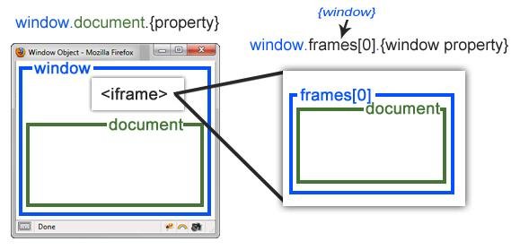

What is the difference between window, screen, and document in JavaScript?
I see these terms used interchangeably as the global environment for the DOM. What is the difference (if there is one) and when should I use each one?
Answer
window is the main JavaScript object root, aka the global object in a
browser, and it can also be treated as the root of the document object model.
You can access it as window.
window.screen or just screen is a small information object about physical
screen dimensions.
window.document or just document is the main object of the potentially
visible (or better yet: rendered) document object model/DOM.
Sincewindow is the global object, you can reference any properties of it
with just the property name - so you do not have to write down window. - it
will be figured out by the runtime.
Suggest
Well, the window is the first thing that gets loaded into the browser. This window object has the majority of the properties like length, innerWidth, innerHeight, name, if it has been closed, its parents, and more.
What about the document object then? The document object is your html, aspx, php, or other document that will be loaded into the browser. The document actually gets loaded inside the window object and has properties available to it like title, URL, cookie, etc. What does this really mean? That means if you want to access a property for the window it is window.property, if it is document it is window.document.property which is also available in short as document.property.
That seems simple enough. But what happens once an IFRAME is introduced?

- See more at: http://eligeske.com/jquery/what-is-the-difference-between-document-and-window-objects-2/#sthash.CwLGOk9c.dpuf